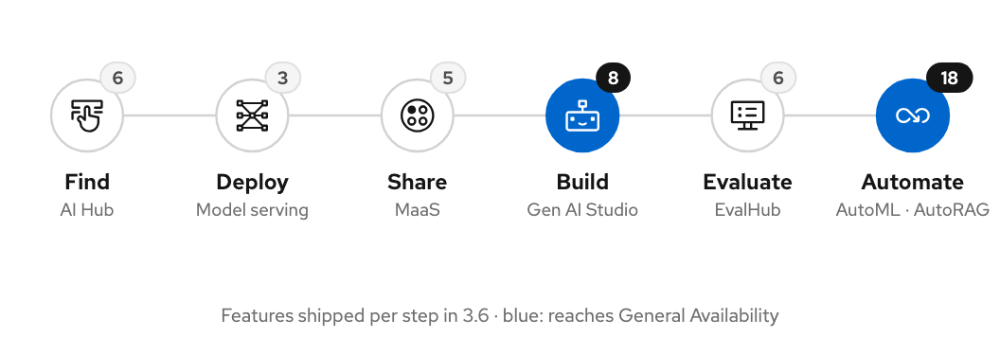
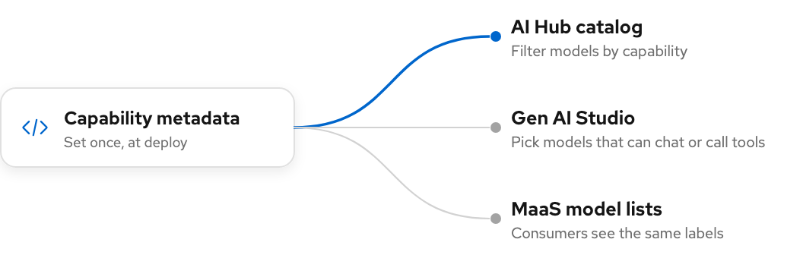
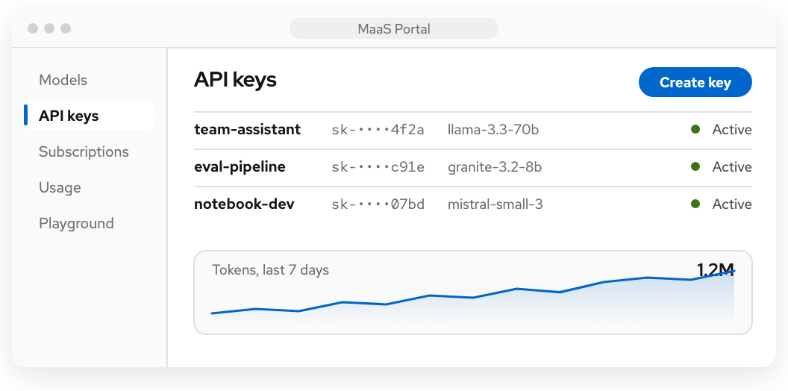
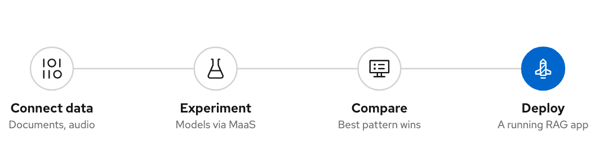
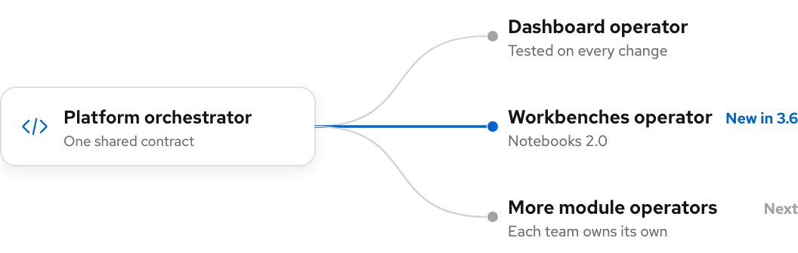

|
Red Hat OpenShift AI RHOAI Dashboard |
RHOAI 3.6 |
|
| | RHOAI 3.6 · RHOAI Dashboard From "which model?" to a running AI application.In 3.6 the RHOAI dashboard connected the whole generative AI path in one product. A team can find a model, deploy it, share it, build on it, measure it and automate it without leaving RHOAI. Three of those steps reach General Availability, and the platform underneath became ready for OpenShift 5. | | |  | | |
|
60
features and initiatives shipped
|
3
capabilities reach GA
|
6
steps of one path, all improved
|
3
release drops: EA1, EA2, GA
|
|
| | The release in one picture One path, end to end.Every step of the path got better in 3.6. The number on each step is how many features shipped there; the blue steps reach General Availability. | | |
 |
| | Why it matters Fewer tools to stitch together. | | |
|
The whole path in one product
Customers go from choosing a model to a governed API and an evaluated application inside RHOAI.
|
Ready for production
Gen AI Studio, AutoML and AutoRAG leave Tech Preview: supported for real workloads, not only trials.
|
Governed by design
MCP servers get a governed registry, models a self-service portal, and the platform meets OpenShift 5.
|
|
| | Find and deploy The catalog knows what a model can do.The AI Hub became the governed front door for models and MCP servers, and deploying from it carries what the catalog knows into the deployment. | | |
One capability vocabulary, everywhere.
A model's capabilities are set once, when it is deployed. The AI Hub catalog, the Gen AI Studio playground and the MaaS model lists all read the same annotations, so users see the same answer to "what can this model do?" wherever they look.
RHAISTRAT-1556

|
|
MCP, governed.
Discover an MCP server, deploy or register it, and track owner, version and policy.
RHAISTRAT-2027 · RHAISTRAT-1762
| |
Private models.
Admin-managed credentials bring private and gated Hugging Face models into the catalog.
RHAISTRAT-1258
| |
NIM in one wizard.
NVIDIA NIM deploys from the same wizard as every other runtime.
RHAISTRAT-1202
|
|
llm-d in one page.
Admins manage inference configs, runtimes and accelerators in one tabbed page.
RHAISTRAT-1281
| |
Tool calling, pre-filled.
Deploying from the catalog carries the model's validated tool-calling settings.
RHAISTRAT-1472
| |
Queues you can see.
Kueue scheduling state on deployments, and a quota view for admins.
RHAISTRAT-432 · RHAISTRAT-1577
|
|
| | Share Models as a product, not a cluster.Models-as-a-Service turns a deployed model into something a developer can subscribe to — with a key, a quota and a priority — and the same building blocks now serve AI Grid tenants. | | |
|
New in 3.6
MaaS Portal. A front door for models.
Developers who call models, but never run clusters, get a place of their own: the endpoints they have been granted, their API keys and their usage, without an OpenShift account. It ships as its own distribution, built from the same code as the RHOAI dashboard.
RHAISTRAT-1545

|
|
External models, managed here.
Admins create, edit and delete external models and providers from the dashboard, next to the models they host.
RHAISTRAT-2318 · RHAISTRAT-2319
| |
Subscriptions
Priority reaches the scheduler.
A subscription's request priority now flows to llm-d flow control, so llm-d can serve higher-priority subscriptions first.
RHAISTRAT-2701
|
|
| | Build, evaluate, automate Three capabilities reach GA.The tools teams build AI applications with leave Tech Preview, and each one now ends in something that runs. | | |
|
GA
Gen AI Studio.
The playground and the APIs behind it are supported for production.
RHAISTRAT-1939
| |
GA
AutoRAG.
Finds the best retrieval pattern for your documents automatically.
RHAISTRAT-2678
| |
GA
AutoML.
Trains and compares models on tabular and time-series data.
RHAISTRAT-2694
|
From an experiment to a running RAG app.
AutoRAG now goes all the way: connect your data, let it try retrieval patterns with models served through MaaS, compare them, and deploy the winner as a running application — or as a starter kit to customise. It reads more of the world too: scanned documents, audio and graph-based retrieval.
RHAISTRAT-2646 · RHAISTRAT-2440 · RHAISTRAT-1860

|
|
Playground to API.
A tested playground configuration deploys as a callable API service.
RHAISTRAT-1914
| |
Chat with documents.
Attach documents to a playground chat and ask about them.
RHAISTRAT-2551
| |
Evaluations in the catalog.
EvalHub benchmarks appear on the model card, where models are chosen.
RHAISTRAT-1858
|
|
| | Data and workbenches Screens instead of YAML.Data access and the notebook experience got their own first-class screens. | | |
|
New module
Data Connect Hub.
List, add and remove data connections from one page.
RHAISTRAT-2504
| |
Data Registry API.
Register and discover data assets through one API.
RHAISTRAT-2381
| |
Feature Store, guided.
Deploy and inspect feature store instances from a form.
RHAISTRAT-1814
|
|
Dev Preview
Workbenches 2.0.
Kubeflow Notebooks 2.0 downstream, deployed by its own module operator.
RHAISTRAT-1681
| |
Tech Preview
KALE.
Turn a notebook into a pipeline, even disconnected, with example notebooks to start from.
RHAISTRAT-1848
|
|
| | Underneath A platform every team ships on.All of this runs on one modular platform. In 3.6 it got easier for teams to own their part of it, and safer to change. | | |
Every team owns its operator.
The RHOAI operator became a platform orchestrator: component teams now ship their own module operators against a shared contract for status, conventions and upgrades. Workbenches 2.0 is the first to arrive this way.
RHAISTRAT-1064

|
|
Ready for OpenShift 5.
Every component follows the cluster TLS profile — a release gate for OpenShift 5.
RHAISTRAT-1716
| |

Lighter on large clusters.
The dashboard operator caches only what it manages, so memory stays flat as clusters grow.
RHOAIENG-98541
| |
An agent on every PR.
Fullsend reviews each dashboard pull request with CodeRabbit; a person decides.
RHOAIENG-98886
|
|
Tested before it merges.
Every dashboard operator change passes envtest, platform-contract conformance and a real-cluster install before it can merge.
RHOAIENG-83682
| |
Upgrades, validated.
A nightly 3.5 → 3.6 upgrade matrix runs across components, so an upgrade surprise is caught by the teams, not by customers.
RHAISTRAT-2210
|
|
| | Coming in 3.7 What comes next. | | |
|
MCP Catalog and Registry, GA
The governed MCP path from 3.6 becomes fully supported.
| |
AI Grid
Models-as-a-Service grows into multi-cluster inference: one front door across sites, tenant organizations in the MaaS Portal and a console for the provider.
| |
YAML editor, GA
Edit any model deployment as YAML, in sync with the form.
| |
Gen AI Studio on the AI Gateway
The playground on the AI Gateway as an alternative backend.
| |
EvalHub reports
Evaluation reports you can read and share from the dashboard.
|
|
| | | | |
|
|
Product site · odh-dashboard
RHOAI Dashboard · Red Hat OpenShift AI · source: Jira, RHOAI 3.6 EA1–GA
|
|